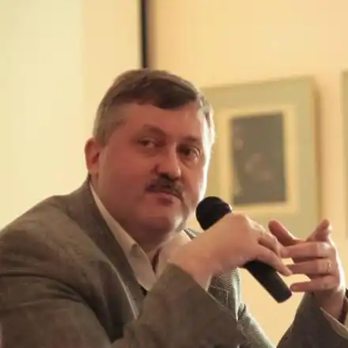
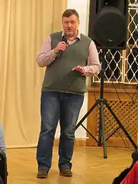
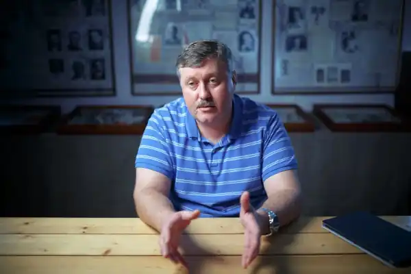

Ростислав Андрійович Семків (нар. 6 червня 1975, м. Тернопіль) — український письменник, літературознавець, літературний критик, перекладач, видавець, доцент Національного університету "Києво-Могилянська Академія".
У 1992 — закінчив Тернопільську школу № 3.
У 1992—1997 — здобув ступінь бакалавра у Тернопільському державному педагогічному університеті (нині національний) за спеціальністю "Вчитель української мови та літератури, англійської мови". У 1997—1999 — навчався на магістерській програмі "Філологія. Теорія, історія української мови та компаративістика" у Національному університеті "Києво-Могилянська академія". У 1999—2002 — аспірант Національного університету "Києво-Могилянська академія". У 2002 — захистив дисертацію за спеціальності 10.01.06. Теорія літератури на тему "Іронія як принцип художнього структуротворення", отримав ступінь кандидата філологічних наук. З 2013 року — докторант за спеціальністю "Теорія літератури". Трудова діяльність: Від 2001 року — старший викладач, а пізніше — доцент кафедри літературознавства Національного університету "Києво-Могилянська академія". Викладає курси "Теорія літератури", "Вступ до компаративістики", "Новітні методи інтерпретації", "Сатира і гумор у європейських літературах", "Література американського кіберпанку". Від 2003 року — директор видавництва "Смолоскип". Стажувався в Гарвардському університеті, у Верховній Раді України, у Комітеті з питань свободи слова та інформації. Член журі "Книга року ВВС—2012". Автор наукових статей у фахових періодичних виданнях, часописі "Критика" та газеті "Дзеркало тижня", оглядів і рецензій на літературному порталі "ЛітАкцент" та в журналі "Український тиждень". Автор художніх та наукових перекладів (романів "Білі зуби" Зеді Сміт (у співавторстві з Наною Куликовою), "Все ясно" Джонатана Сафрана Фоера, монографії "Західний канон" Гарольда Блума (у співавторстві з Ольгою Радомською та ін.). Є членом Комітету з Національної премії України імені Тараса Шевченка (з грудня 2016).